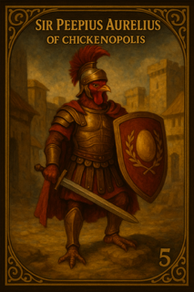

Once upon a time in the bustling streets of Chickenopolis, lived the Cluckington family—a heroic bunch of
chickens with a knack for adventure.
Mother Henrietta Cluckington was famous for her delicious and long lasting corn muffins, while Father Roostwell
Cluckington always woke up the city with his proud crowing at dawn and was known for stopping all of those pesky
animals that try to eat them. Their three chicks—Peep, Cheepers, and Nugget—wanted to be as heroic as their
father.
One spring morning, the Cluckingtons decided to host the annual "Egg-stravaganza," a festival where chickens
from all corners of Chickenopolis gathered to race, dance, and hunt for the legendary golden egg. Peep, the
youngest, dreamed of finding the egg and becoming the hero of the day.
With teamwork, laughter, and a sprinkle of luck, the Cluckington family faced muddy puddles, tricky mazes, and
even a surprise visit from the wise old Professor Featherbeak. In the end, Peep discovered the golden egg hidden
beneath the oldest oak tree, bringing joy and pride to the family.
From that day on, the Cluckingtons became legends in Chickenopolis, proving that with family, friendship, and a
little bit of cluck, anything is possible!

The Cluckington Family

The Golden Knight of Chickenopolis
Long before his name was etched in golden letters on the walls of Chickenopolis, Sir Peepius Aurelius was
simply Peep — the littlest chick of the Cluckington brood. While his father Roostwell defended the coop and
his mother Henrietta baked muffins that could outlast a winter, Peep dreamed not of chores or festivals but of
glory.
That glory arrived one spring morning, when the Cluckingtons hosted the legendary Egg-stravaganza Festival. Between muddy puddles, feather-fluffing races, and a wise riddle from Professor Featherbeak, young Peep stumbled upon the Golden Egg, hidden beneath the oldest oak tree in all of Chickenopolis. Lifting it high, he was crowned the hero of the day, his name cheered across the city.
But Peep hungered for more than a single triumph. He trained in the ways of discipline, inspired by the scrolls of the old Rooster Republic. He donned armor forged in the Roman style, carried the gladius of his forefathers, and bore a shield etched with the Golden Egg and laurel wreath — the eternal symbol of Cluckington victory.
When fox marauders swept into Chickenopolis years later, it was Sir Peepius Aurelius who led the defense. Standing at the city gates, he raised his shield high and cried:
“As I once found the egg, I shall now guard the nest!”
With a cheer from the townsfolk, he drove the invaders back, proving himself not just the hero of a festival, but the champion of a city.
To this day, children of Chickenopolis race beneath the old oak tree, chanting his name, and knights of the city touch their shields to the Golden Egg before battle, whispering his vow:
“In every egg lies a legacy — and in every Cluckington, a hero.”
That glory arrived one spring morning, when the Cluckingtons hosted the legendary Egg-stravaganza Festival. Between muddy puddles, feather-fluffing races, and a wise riddle from Professor Featherbeak, young Peep stumbled upon the Golden Egg, hidden beneath the oldest oak tree in all of Chickenopolis. Lifting it high, he was crowned the hero of the day, his name cheered across the city.
But Peep hungered for more than a single triumph. He trained in the ways of discipline, inspired by the scrolls of the old Rooster Republic. He donned armor forged in the Roman style, carried the gladius of his forefathers, and bore a shield etched with the Golden Egg and laurel wreath — the eternal symbol of Cluckington victory.
When fox marauders swept into Chickenopolis years later, it was Sir Peepius Aurelius who led the defense. Standing at the city gates, he raised his shield high and cried:
“As I once found the egg, I shall now guard the nest!”
With a cheer from the townsfolk, he drove the invaders back, proving himself not just the hero of a festival, but the champion of a city.
To this day, children of Chickenopolis race beneath the old oak tree, chanting his name, and knights of the city touch their shields to the Golden Egg before battle, whispering his vow:
“In every egg lies a legacy — and in every Cluckington, a hero.”